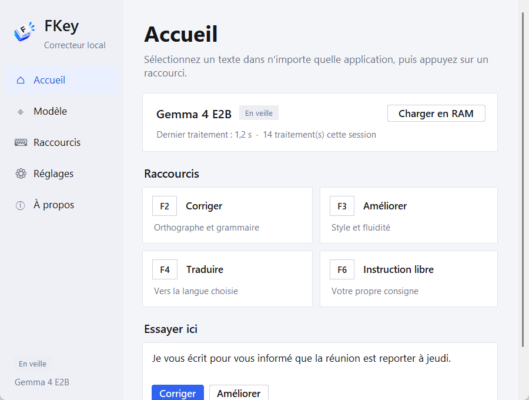
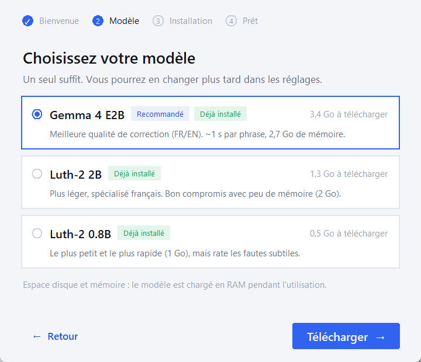

Sélectionnez un texte dans Word, Outlook, votre navigateur… appuyez sur F2. Il est corrigé sur place. Un modèle d'IA tourne sur votre ordinateur : rien ne part sur internet.
Pourquoi FKey
Pas de fenêtre à ouvrir, pas de copier-coller vers un site. FKey attend dans la zone de notification et agit là où vous écrivez.
Fonctionne dans toutes les applications où l'on peut sélectionner du texte : bureautique, mail, navigateur, messagerie.
Le modèle de langue tourne sur votre machine. Vos textes ne quittent jamais l'ordinateur. Fonctionne hors connexion.
Environ une seconde par phrase sur un portable récent, sans carte graphique dédiée. Le modèle reste chargé, prêt à répondre.
Raccourcis
Les touches se personnalisent dans les réglages. La langue de traduction aussi.
Orthographe, grammaire, accords. Le sens et le ton sont conservés.
Style, fluidité et clarté, sans changer le message.
Vers la langue de votre choix : anglais, espagnol, allemand, japonais…
« Rends ce texte plus formel », « Résume en 3 points », « Tutoie »…
L'application
Un assistant vous accompagne au premier lancement : choix du modèle, téléchargement, c'est prêt. Ensuite, FKey se fait oublier.


Archive portable pour Windows. Décompressez, lancez, c'est tout. Le modèle (≈ 3 Go) se télécharge au premier lancement.
⬇ FKey-portable.zip ≈ 37 Mo · Windows 10/11 64 bitsConfidentialité
FKey n'a pas de serveur. Le seul accès internet est le téléchargement du modèle, à votre demande, depuis Hugging Face et GitHub.
Pas d'inscription, pas de clé API, pas de statistiques d'usage. Le dossier de l'application contient tout ; supprimez-le pour désinstaller.
FKey simule Ctrl+C / Ctrl+V dans l'application active. Le texte est traité par llama.cpp avec un modèle ouvert (Gemma 4 ou Luth-2).
Le code source est publié sur GitHub. Vous pouvez le lire, le compiler et le modifier.
FAQ
Windows 10 ou 11 en 64 bits, 8 Go de mémoire vive recommandés (le modèle en occupe environ 2,7 Go lorsqu'il est chargé) et 4 Go d'espace disque. Aucune carte graphique n'est nécessaire.
Oui. Une connexion n'est nécessaire qu'une seule fois pour télécharger le modèle. Ensuite, tout fonctionne hors ligne.
Le modèle recommandé (Gemma 4 E2B) corrige orthographe, grammaire et accords en français comme en anglais, y compris les homophones classiques (on/ont, ce/se, c'est/s'est…). Un modèle plus léger est proposé pour les ordinateurs avec peu de mémoire.
FKey n'est pas encore signé numériquement. Cliquez sur « Informations complémentaires » puis « Exécuter quand même ». Le code source est public si vous souhaitez le vérifier ou compiler vous-même.
Ouvrez FKey depuis la zone de notification, puis Réglages › « Réactiver les raccourcis ». Cela arrive parfois après une mise en veille.
Quittez FKey depuis le menu de la zone de notification, puis supprimez le dossier. Si le démarrage automatique était activé, supprimez aussi le raccourci FKey.vbs dans le dossier Démarrage de votre session (indiqué dans le fichier LISEZMOI).